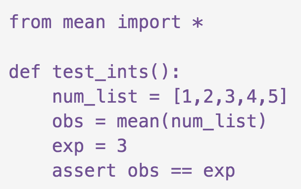

<!doctype html>
<html lang="en">
    <head>
        <meta charset="utf-8">
        <meta name="viewport" content="width=device-width, initial-scale=1.0, maximum-scale=1.0, user-scalable=no">

        <title>Slides Template</title>
        <link rel="stylesheet" href="./css/reveal.css">
        <link rel="stylesheet" href="./css/theme/white.css" id="theme">
        <link rel="stylesheet" href="./css/highlight/zenburn.css">
        <link rel="stylesheet" href="./css/print/paper.css" type="text/css" media="print">


    </head>
    <body>

        <div class="reveal">
            <div class="slides"><section  data-markdown><script type="text/template">


<!-- .slide: data-background="./images/laptop_background.svg" -->
### Publishing your Software Project 
#### with the Journal of Open Source Software


Lucy Whalley  
[lucydot.github.io/slides](https://lucydot.github.io/slides)

</script></section><section  data-markdown><script type="text/template">
<!-- .slide: data-background="./images/laptop_background.svg" -->
#### Materials Design Group @ ICL


[github.com/WMD-group](https://github.com/WMD-group)

</script></section><section  data-markdown><script type="text/template">
<!-- .slide: data-background="./images/laptop_background.svg" -->
#### `effmass` Python package


code: [github.com/lucydot/effmass](https://github.com/lucydot/effmass)  
research paper: [arxiv.org/abs/1811.02281](https://arxiv.org/abs/1811.02281)

</script></section><section  data-markdown><script type="text/template">
<!-- .slide: data-background="./images/laptop_background.svg" -->
#### From the [JOSS guiding principles](https://joss.readthedocs.io/en/latest/reviewer_guidelines.html#guiding-principles)
</br>
> "We like to think of JOSS as a ‘developer friendly’ journal. That is, if the submitting authors have followed best practices (have documentation, tests, continuous integration, and a license) then their review should be rapid."

</br>
</br>
</script></section><section  data-markdown><script type="text/template">
<!-- .slide: data-background="./images/laptop_background.svg" -->
#### Why should I submit to JOSS?

  

- published paper and citations
- an incentive to learn new tools
- peer review process brings increased confidence
- good way to promote your code to the community

</script></section><section  data-markdown><script type="text/template">
<!-- .slide: data-background="./images/laptop_background.svg" -->
#### Why should *we* submit to JOSS?


- well-documented and well-tested software freely available to the research community
- reproducibility, sustainability, maintainability
- article: ["The Scientific Paper Is Obsolete"](https://www.theatlantic.com/science/archive/2018/04/the-scientific-paper-is-obsolete/556676/)

</script></section><section  data-markdown><script type="text/template">
<!-- .slide: data-background="./images/laptop_background.svg" -->
#### JOSS is growing


</script></section><section  data-markdown><script type="text/template">
<!-- .slide: data-background="./images/laptop_background.svg" -->

#### The JOSS [submission and review flow](https://peerj.com/articles/cs-147/)


</script></section><section  data-markdown><script type="text/template">
<!-- .slide: data-background="./images/laptop_background.svg" -->
#### A JOSS paper contains...

- A list of the software authors and their affiliations
- A summary describing the high-level functionality
- A statement of need 
- A list of key references 
- A summary of research projects using the software

#### ...not a lot!


</script></section><section  data-markdown><script type="text/template">
<!-- .slide: data-background="./images/laptop_background.svg" -->
#### The JOSS review criteria

- Software license
- Functionality
- Installation instructions
- Community guidelines
- **Tests**
- **Documentation**

</script></section><section  data-markdown><script type="text/template">
<!-- .slide: data-background="./images/laptop_background.svg" -->
#### Tests

A simple unit test



Example from [Katy Huff's Python testing workshop](https://katyhuff.github.io/python-testing/05-pytest/)

</script></section><section  data-markdown><script type="text/template">
<!-- .slide: data-background="./images/laptop_background.svg" -->
#### Tests

Another simple unit test


Example from [Katy Huff's Python testing workshop](https://katyhuff.github.io/python-testing/05-pytest/)

</script></section><section  data-markdown><script type="text/template">
<!-- .slide: data-background="./images/laptop_background.svg" -->

#### Tests

- **unit tests**: test individual functions 
- **integration tests**: test that the functions work together correctly
- **end-to-end tests**: test from start to finish

Tools: [pytest](https://docs.pytest.org/en/latest/),[Travis CI](https://travis-ci.org/), [Jupyter Notebook](https://jupyter.org/) </br>
`effmass`: [unit tests](https://github.com/lucydot/effmass/tree/master/tests), [CI](https://travis-ci.com/lucydot/effmass), [(manual) E2E](https://github.com/lucydot/effmass/blob/master/paper/notebook.ipynb)


</script></section><section  data-markdown><script type="text/template">
<!-- .slide: data-background="./images/laptop_background.svg" -->
#### Documentation

- **tutorials**: how to complete a particular task 
- **explanation**: background theory 
- **reference**: API-documentation 

Tools: [Jupyter Notebook](https://jupyter.org/), [ReadTheDocs](https://readthedocs.org/), [Sphinx](http://www.sphinx-doc.org/en/master/)  </br>
`effmass`: [tutorial](https://github.com/lucydot/effmass/blob/master/paper/notebook.ipynb), [background](https://arxiv.org/pdf/1811.02281.pdf), [reference](https://effmass.readthedocs.io/en/latest/API%20documentation.html)

</script></section><section  data-markdown><script type="text/template">
<!-- .slide: data-background="./images/laptop_background.svg" -->

#### Final thoughts

- Other relevant journals: [www.codeisscience.com](http://www.codeisscience.com/journal_table.html)
- JOSS are always looking for new reviewers
- Possible ways to support each other? --> workshops, code review, mentoring.

slides and image credits at [lucydot.github.io/slides](lucydot.github.io/slides)


</script></section></div>
        </div>

        <script src="./lib/js/head.min.js"></script>
        <script src="./js/reveal.js"></script>

        <script>
            function extend() {
              var target = {};
              for (var i = 0; i < arguments.length; i++) {
                var source = arguments[i];
                for (var key in source) {
                  if (source.hasOwnProperty(key)) {
                    target[key] = source[key];
                  }
                }
              }
              return target;
            }

            // Optional libraries used to extend on reveal.js
            var deps = [
              { src: './lib/js/classList.js', condition: function() { return !document.body.classList; } },
              { src: './plugin/markdown/marked.js', condition: function() { return !!document.querySelector('[data-markdown]'); } },
              { src: './plugin/markdown/markdown.js', condition: function() { return !!document.querySelector('[data-markdown]'); } },
              { src: './plugin/highlight/highlight.js', async: true, callback: function() { hljs.initHighlightingOnLoad(); } },
              { src: './plugin/zoom-js/zoom.js', async: true },
              { src: './plugin/notes/notes.js', async: true },
              { src: './plugin/math/math.js', async: true }
            ];

            // default options to init reveal.js
            var defaultOptions = {
              controls: true,
              progress: true,
              history: true,
              center: true,
              transition: 'default', // none/fade/slide/convex/concave/zoom
              dependencies: deps
            };

            // options from URL query string
            var queryOptions = Reveal.getQueryHash() || {};

            var options = {"transition":"none"};
            options = extend(defaultOptions, options, queryOptions);
        </script>


        <script>
          Reveal.initialize(options);
        </script>
    </body>
</html>
